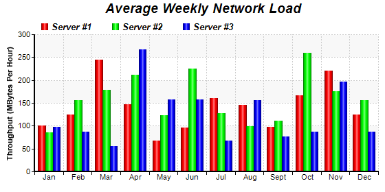

This example demonstrates a multi-bar chart with cylinder shading effects. It also demonstrates using dotted line style for grid lines.
The cylinder shading effect is the result of using the cylinder bar shape in 2D. This is by using
BarLayer.setBarShape with
CircleShape.
The dotted grid lines in this example is configured by using
BaseChart.dashLineColor to define the dotted line color, then use it in
XYChart.setPlotArea as the the grid line color.
The following is the command line version of the code in "cppdemo/multicylinder". The MFC version of the code is in "mfcdemo/mfcdemo". The Qt Widgets version of the code is in "qtdemo/qtdemo". The QML/Qt Quick version of the code is in "qmldemo/qmldemo".
#include "chartdir.h"
int main(int argc, char *argv[])
{
// Data for the chart
double data0[] = {100, 125, 245, 147, 67, 96, 160, 145, 97, 167, 220, 125};
const int data0_size = (int)(sizeof(data0)/sizeof(*data0));
double data1[] = {85, 156, 179, 211, 123, 225, 127, 99, 111, 260, 175, 156};
const int data1_size = (int)(sizeof(data1)/sizeof(*data1));
double data2[] = {97, 87, 56, 267, 157, 157, 67, 156, 77, 87, 197, 87};
const int data2_size = (int)(sizeof(data2)/sizeof(*data2));
const char* labels[] = {"Jan", "Feb", "Mar", "Apr", "May", "Jun", "Jul", "Aug", "Sept", "Oct",
"Nov", "Dec"};
const int labels_size = (int)(sizeof(labels)/sizeof(*labels));
// Create a XYChart object of size 560 x 280 pixels.
XYChart* c = new XYChart(560, 280);
// Add a title to the chart using 14pt Arial Bold Italic font
c->addTitle(" Average Weekly Network Load", "Arial Bold Italic", 14);
// Set the plotarea at (50, 50) and of 500 x 200 pixels in size. Use alternating light grey
// (f8f8f8) / white (ffffff) background. Set border to transparent and use grey (CCCCCC) dotted
// lines as horizontal and vertical grid lines
c->setPlotArea(50, 50, 500, 200, 0xffffff, 0xf8f8f8, Chart::Transparent, c->dashLineColor(
0xcccccc, Chart::DotLine), c->dashLineColor(0xcccccc, Chart::DotLine));
// Add a legend box at (50, 22) using horizontal layout. Use 10 pt Arial Bold Italic font, with
// transparent background
c->addLegend(50, 22, false, "Arial Bold Italic", 10)->setBackground(Chart::Transparent);
// Set the x axis labels
c->xAxis()->setLabels(StringArray(labels, labels_size));
// Draw the ticks between label positions (instead of at label positions)
c->xAxis()->setTickOffset(0.5);
// Add axis title
c->yAxis()->setTitle("Throughput (MBytes Per Hour)");
// Set axis line width to 2 pixels
c->xAxis()->setWidth(2);
c->yAxis()->setWidth(2);
// Add a multi-bar layer with 3 data sets
BarLayer* layer = c->addBarLayer(Chart::Side);
layer->addDataSet(DoubleArray(data0, data0_size), 0xff0000, "Server #1");
layer->addDataSet(DoubleArray(data1, data1_size), 0x00ff00, "Server #2");
layer->addDataSet(DoubleArray(data2, data2_size), 0x0000ff, "Server #3");
// Set bar shape to circular (cylinder)
layer->setBarShape(Chart::CircleShape);
// Configure the bars within a group to touch each others (no gap)
layer->setBarGap(0.2, Chart::TouchBar);
// Output the chart
c->makeChart("multicylinder.png");
//free up resources
delete c;
return 0;
}
© 2023 Advanced Software Engineering Limited. All rights reserved.